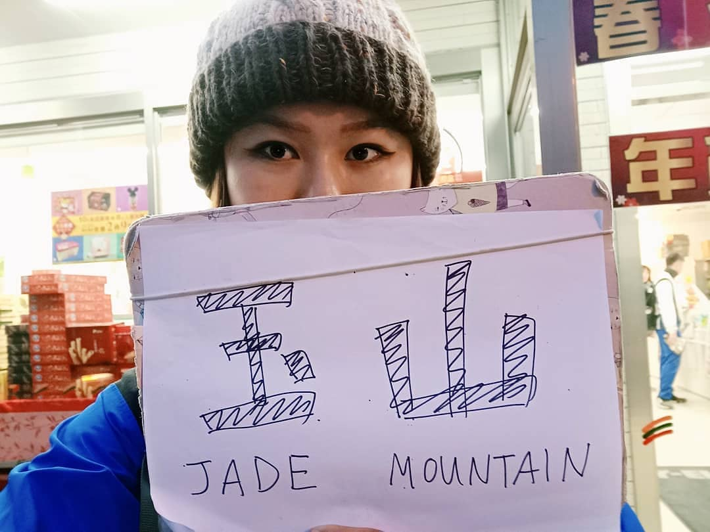
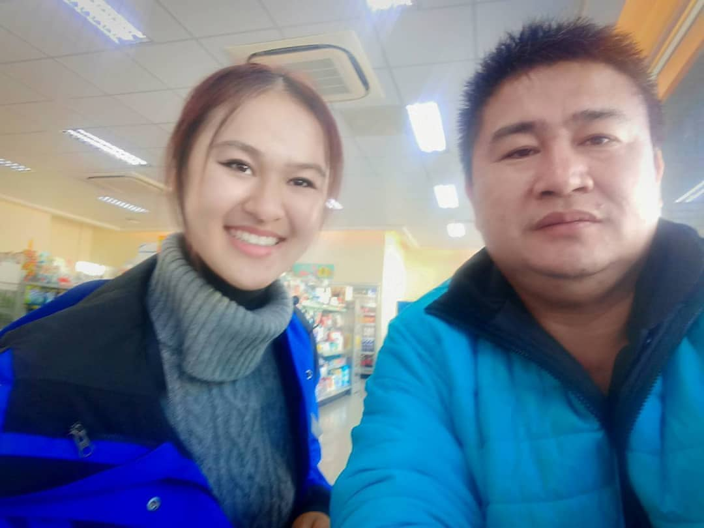
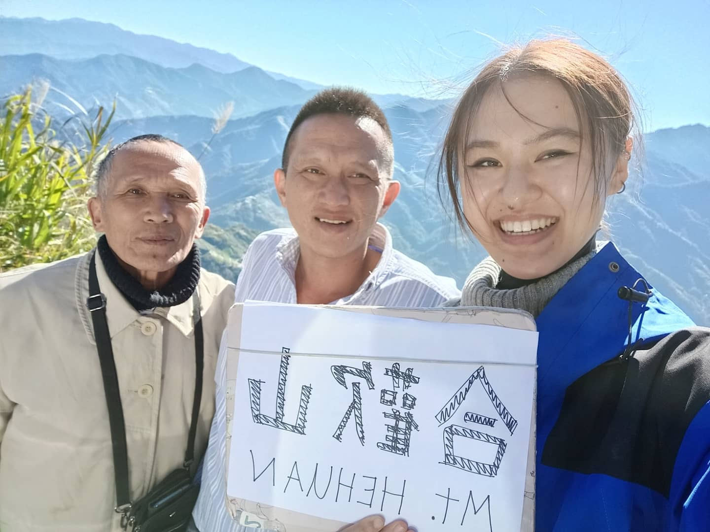
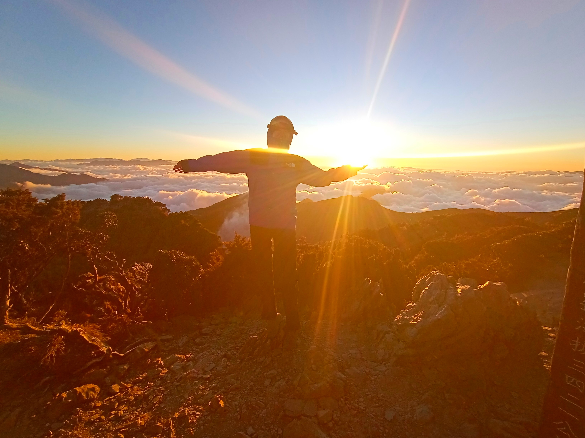
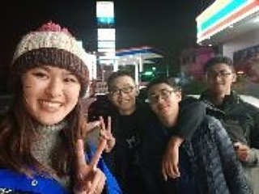
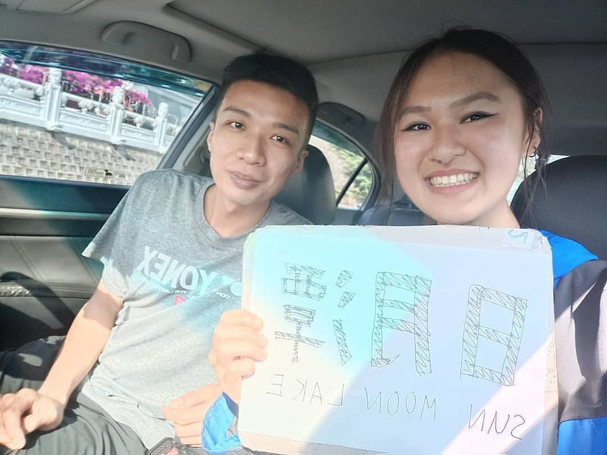
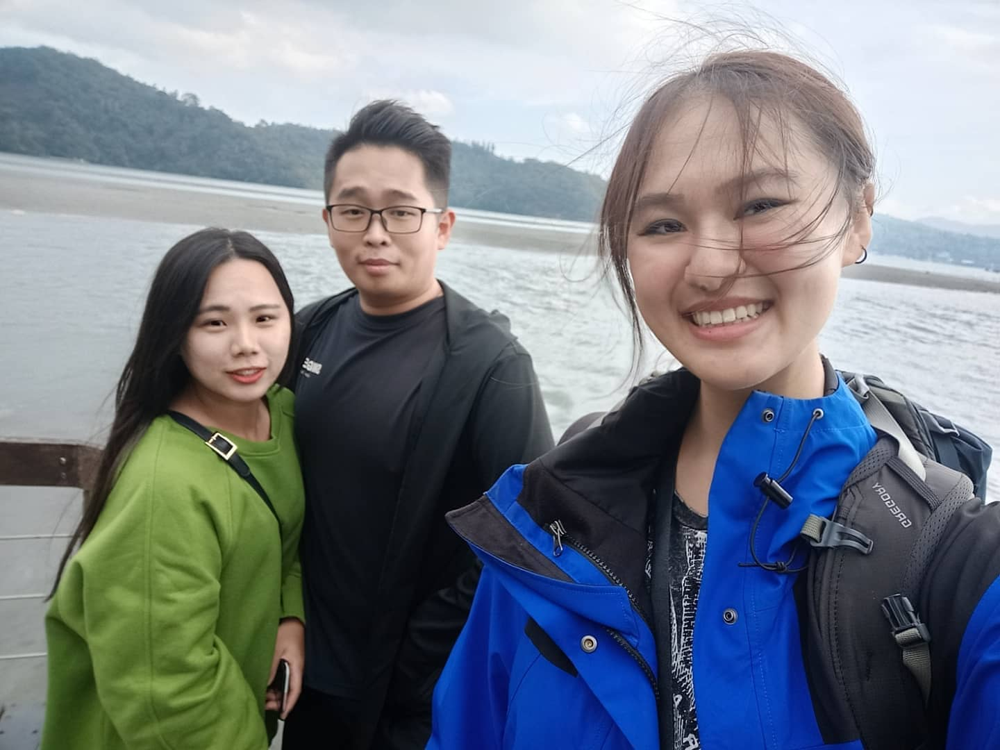
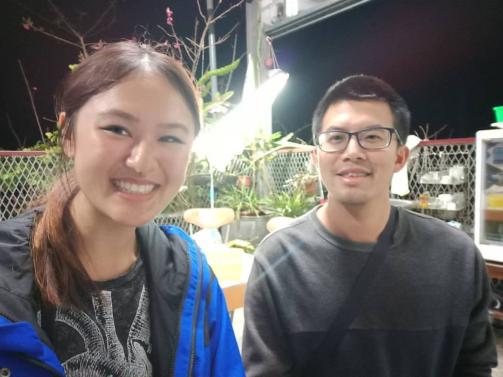
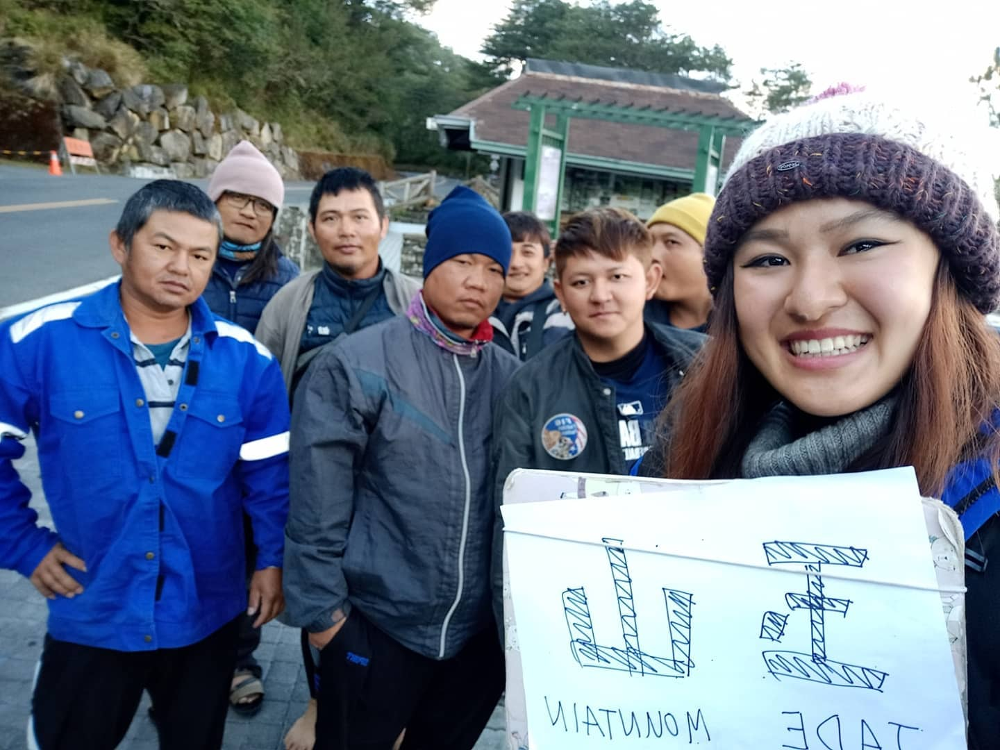
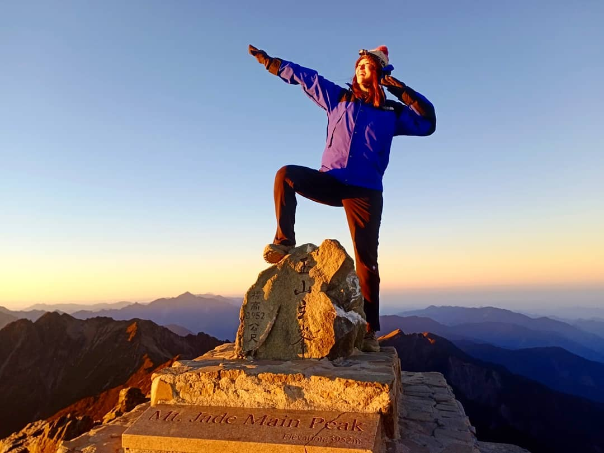

I lived in Taiwan for 6 months. Once, I hitchhiked 10 times to climb Yushan, the highest mountain in East Asia (depending on how you define East Asia), because I can't drive cars nor scooters and the only thing I'm good at is missing the bus (when there is one).

Hitchhike #1: Taichung -> Puli
I got to Taichung too late because I had to finish my programming project first and missed the last bus to Puli.
Luckily, a lady at the station overheard me and offered to go get her car and give me a ride to Puli!
Hitchhike #2: Puli -> a gas station on the way to Hehuanshan
To climb Yushan, you need a mountaineering permit and since I was going alone, they also needed proof I've climbed a 3000+m mountain, so I decided to go take a proof photo at Hehuanshan.
I waited around 20min until a blue truck stopped for me. The driver said he has to go to work so he can only drive me halfway, but started calling his friends asking if any of them can go to Hehuanshan. He loves hiking too and said he'd even go hike with me if he had time!
I couldn't believe my luck when we stopped at a gas station, we met a friend of the driver's who was actually heading towards Hehuanshan! We had tea together before I switched cars 😊

Hitchhike #3: Gas station -> Hehuanshan
My third driver was driving back to his home in the mountains with his father, and Hehuanshan was on the way. He was also Atayal so I got to share my Atayal name with them 😁 (Few months before this trip, I once met an Atayal tribe while looking for wild hot springs and they gave me the Atayal name "Wa-wi" meaning "the Sun")

Hitchhike #4: Hehuanshan -> Puli
At Hehuanshan's east peak, I met three students around my age, they were staying in Cinqing halfway between the mountain and Puli, so they let me ride their car there.
But once we got To Cinqing, we just missed the last bus to Puli. They were exhausted after the hike, still had hiking plans the next day and yet they offered to drive another hour to Puli 🥺


Hitchhike #5: Chung Tai Chan Monastery -> Puli
I took the bus to the monastery but to go back to the city, I had to wait an hour for the bus. Time was rather precious as I still wanted to look around sun moon lake before going to Yushan that afternoon.
As soon as I made a sign to hitchhike, a family stopped and let me squeeze in their car! They even drove me right where I was staying!
Hitchhike #6: Puli -> Wenwu Temple
The lake is between Puli and Yushan, with a bus to Yushan twice a day. My couchsurfing host gave me tips for hitchhiking spots and within 5min, a guy on his way to Itathao village drove me to Wenwu Temple!
He posted our selfie on his Instagram too, so when I hiked up Yushan later to the lodge I was staying, a worker there recognized me from his friend's instagram 😂

Hitchhike #7: Wenwu Temple -> Nine Frogs Stack -> Itathao Village
I had some spots around the lake I wanted to visit, but time was running out (initially I planned to walk around the entire lake). Again, as soon as I stuck my thumb out a car with two couples stopped for me.
They dropped me off at Nine Frogs Stack, but later decided they wanted to get off and look around too, so after we visited the stack together I rode their car again to Itathao village.
Also, at Nine Frogs Stack I met the family who was in my group tour at Chung Tai Chan Monastery that morning :') It was pure coincidence but led my drivers to believe I'm a notorious hitchhiker in the area 😅

Hitchhike #8: Itathao Village -> Shuili
I spent more time than planned at the monastery, in the end I missed the bus at sun moon lake. An old couple let me hitchhike and dropped me off at Shuili, where they thought there was a bus to Dongpu Lodge (where I booked a room). Turns out, the buses only go to Dongpu Hot Springs, and the lodge misleadingly is not located there.
By the time we realized our mistake, we also found out the road to Yushan is already closed for the night, there's no way to go to the lodge.
I decided to spend the night in Shuili, but the little hostels there were all full. The last buses were gone too, and I would not dare hitchhike after the sun sets. My last resort was to buy tea at 7-Eleven and rest there until it was light enough to hitchhike again.
Hitchhike #9: Shuili -> Wanghsiang
I woke up from a nap at 7-Eleven when a guy sitting next to me asked if I was going or came back from the mountains. I told him about my crisis, turns out he is an extremely experienced mountain climber, he climbed Yushan 11 times already!
He told me he knows where I can stay, the closest Bed & Breakfast to the road gate, and went out of his way to drive me there (he lives in Shuili)!
Thanks to him, I slept very comfortably had delicious breakfast, and found my final hitchhike before climbing Yushan 🙏

Hitchhike #10: Wanghsiang -> Yushan
I woke up at 5am to start looking for cars to maximize my chances. My chances were small though, as most hikers to Yushan would spend the night at Dongpu Lodge near the hiking entrance as I initially planned.
After over 30min and already thinking about how to find an Uber in the mountains, I found a van full of people of the Bunun tribe on their way to work in Yushan.
The ones in the van are in charge of adding nets to prevent rockfalls in the mountains, and others of the tribe are usually the ones carrying up material for the lodge where I'm staying. Apparently, their best hiker can easily climb up and down Yushan within a day!



TODO: Share more hiking adventures :)